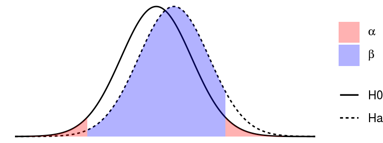
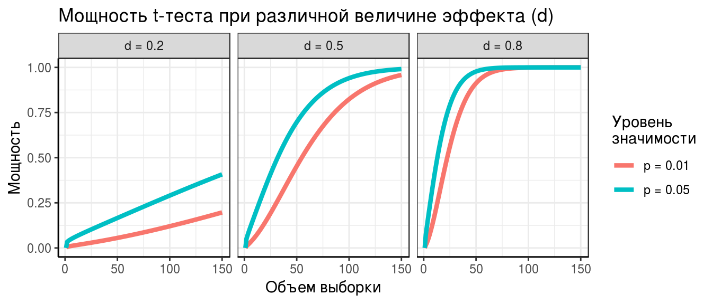

Методы выявления дифференциально-экспрессируемых белков
Марина Варфоломеева
В этом разделе мы поговорим о том, как делать анализ дифференциальной экспрессии в R (R Core Team 2018).
- Данные о протеоме жабр гребешка Pecten maximus из работы Artigaud et al. 2015
Тестирование статистических гипотез
Допустим, мы хотим сравнить уровень экспрессии белков у морских гребешков, которых содержали при разной температуре. Исходя из существующих исследований и общих знаний мы предполагаем, что уровень экспрессии некоторых белков будет различаться (это то, что мы на самом деле думаем — исследовательская гипотеза). Чтобы проверить исследовательскую гипотезу, нужна нулевая гипотеза. Обычно нулевые гипотезы постулируют отсутствие каких либо различий. Так и в этом примере, нулевая гипотеза говорит, что уровень экспрессии не будет различаться.
Далее, мы проводим эксперимент, измеряем уровень экспрессии. После этого рассчитываем статистику, которая позволит оценить разницу уровней экспрессии в эксперименте (например, t-критерий). Наблюдаемое в эксперименте значение статистики сравнивают со значением, которое было бы получено, если бы уровни экспрессии не различались (т.е. если нулевая гипотеза верна). Если это значение маловероятно получить, когда уровни экспрессии не различаются, то мы “отвергаем” нулевую гипотезу. В таком случае, мы считаем, что результаты нашего эксперимента говорят в пользу нашей исследовательской гипотезы.
При тестировании статистических гипотез возможно четыре варианта развития событий: мы можем принять верное решение (отвергнуть неправильную или принять верную \(H_0\)), или мы можем ошибиться — тоже двумя разными способами. В таблице ниже показаны типы ошибок при проверке гипотез.
| \(H_0\) == TRUE | \(H_0\) == FALSE | |
|---|---|---|
| Отклоняем \(H_0\) | Ошибка I рода Ложно-положительный результат | Правильно Положительный результат |
| Сохраняем \(H_0\) | Правильно Отрицательный результат | Ошибка II рода Ложно-отрицательный результат |

Ошибки I рода возникают тогда, когда мы ошибочно отклоняем справедливую \(H_0\), т.е. находим различия там, где их нет на самом деле. Находить различия там, где их нет — значит множить сущности сверх необходимого. Поэтому вероятность ошибок I рода ученые договорились строго контролировать и следить, чтобы они появлялись не чаще, чем в 5% случаев. Иногда этот произвольно выбранный порог делают еще жестче — 1%. Вероятность ошибок I рода принято обозначать \(\alpha\). Это тот самый уровень значимости, с которым принято сравнивать доверительные вероятности (p-values), полученные в статистических тестах.
Ошибки II рода возникают, когда мы ошибочно принимаем ложную \(H_0\), т.е. не находим различий, там, где они на самом деле есть. Несмотря на то, что про ошибки II рода реже вспоминают, их не менее обидно делать. Считается допустимым, если такие ошибки возникают не чаще чем в 20% случаев. Это тоже совершенно произвольно взятый порог. Вероятность ошибок II рода принято обозначать \(\beta\).
Мощность теста — это способность выявлять различия, когда они есть на самом деле. Зная \(\beta\) можно вычислить вероятность того, что статистический тест обнаружит различия \(Power = 1 - \beta\)

Мощность любого статистического теста будет больше:
- если величина эффекта (d, величина выявляемых различий) будет больше
- если увеличить объем выборки
- если повысить уровень значимости (например, вместо \(\alpha = 0.01\), взять \(\alpha = 0.05\))
На примере t-критерия зависимость мощности от этих трех величин будет выглядеть так:

Способы выявления дифференциально экспрессируемых белков (The Good, The Bad, and The Ugly).
Есть множество способов измерить разницу экспрессии. Вот самые распространенные:
- fold change — соотношение уровеней экспрессии. Применяется, если нет повторностей. Грубый метод оценки, т.к. не позволяет оценить статистическую значимость.
- t-тест — при небольших выборках у него малая мощность из-за неточной оценки \(\sigma\).
- Модерированный t-тест (с использованием Empirical Bayes) — более мощный, чем обычный t-критерий. Позволяет точнее оценить \(\sigma\) для конкретного белка, используя информацию о распределении \(\sigma\) для всех белков.
Fold change (The Ugly)

Fold change (FC) — исторически первый способ оценивать дифференциальную экспрессию. Его придумали в те времена, когда делать повторности было дорого. Договорились, что будем считать, что экспрессия меняется, если ее уровень сильно отличается между группами (в 1.5 или 2 раза).
Нужно оценить, во сколько раз экспрессия в одной группе больше, чем экспрессия в другой группе. FC — это пропорция, дробь, в числителе одна группа, в знаменателе другая.
Не надо усреднять соотношения!
Допустим, мы сравниваем уровень экспрессии до и после какого-то воздействия и у нас есть две повторности:
| Повторность 1 | Повторность 2 | Среднее | |
|---|---|---|---|
| До воздействия | \(A_{1} = 1\) | \(A_{2} = 10\) | \(\bar{A} = 5.5\) |
| После воздействия | \(B_{1} = 10\) | \(B_{2} = 1\) | \(\bar{B} = 5.5\) |
| \(A_{1}/B_{1} = 1/10\) | \(A_{2}/B_{2} = 10/1\) | ||
| Соотношение экспрессии | \[\frac {A_{1}/B_{1}} {A_{2}/B_{2}} = \frac {1/10 + 10/1} {2} = 5.05\] (Неправильно!) | \[\bar{A} / \bar{B} = 5.5/5.5 = 0\] (Правильно!) |
В первой из повторностей уровень экспрессии cнизился в 10 раз (\(1/10\)), а во второй — в 10 раз вырос (\(10/1\)).
Если мы опрометчиво усредним эти соотношения \((1/10 + 10/1) / 2 = 5.05\), то получится, что уровень экспрессии в среднем вырос в 5 раз — ерунда.
Правильней было бы посчитать средний уровень экспрессии до (\((1 + 10)/2 = 5.5\)) и после (\((10 + 1)/2 = 5.5\)), и только потом посчитать их соотношение. Тогда мы получили бы гораздо более логичный результат: на самом деле соотношение уровней экспрессии не изменилось (\(5.5/5.5 = 1\)).
Соотношения сырых данных экспрессии брать неудобно, потому что обычные соотношения распределены несимметрично вокруг 1. Сравните, например соотношения: \(1/5 = 0.2\), \(5/5 = 1\) и \(5/1 = 5\).
Гораздо удобнее брать логарифм соотношения, потому что его величина распределена симметрично вокруг нуля (и тогда \(log(X) = -1 * log(1/X)\)). Действительно, в нашем примере будет так: \(log(1/5) = -1.6\), \(log(5/5) = 0\) и \(log(5/1) = 1.6\).
В симметричности распределения логарифмов соотношений мы можем убедиться при помощи простой симуляции.

Операции с логарифмами:
- \(log(1) = 0\)
- \(log(ab) = log(a) + log(b)\)
- \(log(a/b) = log(a) - log(b)\) - это и есть fold change
Обычно, данные логарифмируют при помощи логарифма по основанию 2 — log2(), чтобы облегчить сравнение fold change. Тогда, если экспрессия в 2 раза отличается между образцами, получится, что \(log2(2x/x) = log2(2) = 1\).
Основная проблема использования fold change — этот критерий выбирает гены, у которых самая большая разница экспрессии, но не позволяет проверить статистическую значимость различий. На самом деле, при наличии повторностей можно не использовать fold change, поскольку мы можем оценить статистическую значимость различий уровня экспрессии.
t-тест (The Bad)
Чтобы проверить гипотезу \(H_{0}: \bar{A} - \bar{B} = 0\), нужно оценить дисперсию в генеральной совокупности \(\sigma\). После этого можно воспользоваться t-критерий.
t-критерий
\[t = \frac {\bar {A} - \bar {B}} {SE_{A - B}}\]
Обычный t-тест исходит из предположения, что дисперсии в группах одинаковы. Обычно, это предположение нереалистично. Мы будем использовать модификацию t-теста для разных дисперсий в группах — т.наз. t-критерий Велша (Welch’s t-test). Важно, что t-тестом Уэлча можно пользоваться, даже если дисперсии равны. Он немного консервативнее, чем тест Стьюдента.
\[t = \frac {\bar {A} - \bar {B}} {\sqrt{\frac{s^{2}_{a}}{n_a} + \frac{s^{2}_{b}}{n_b}}}\] Приблизительное число степеней свободы для t распределения можно рассчитать по уравнению Уэлча-Саттеруэйта:
\[df_{ Welch-Satterthwaite} \approx \cfrac {\bigg(\cfrac{s^2_{x_1}}{n_{x_1}} + \cfrac{s^2_{x_2}}{n_{x_2}}\bigg)^2} {\cfrac{1}{n_{x_1} - 1}\bigg(\cfrac {s_{x_1}^2} {n_{x_1}}\bigg)^2 + \cfrac{1}{n_{x_2} - 1}\bigg(\cfrac {s_{x_2}^2} {n_{x_2}}\bigg)^2}\]
Условия применимости:
- Наблюдения должны быть независимы друг от друга.
- Выборки должны быть независимы (либо должна использоваться специальная модификация теста для зависимых выборок).
- Если большой объем выборки (N > 30), то распределение t-статистики приближается к нормальному. К сожалению, в протеомике как правило используются небольшие выборки.
- Если данные распределены нормально, то при любом объеме выборки t-статистика подчиняется t-распределению с числом степеней свободы df. К счастью, в логарифмической шкале значения экспрессии распределены нормально.
Далее при t-тесте следуют действия, обычные при тестировании гипотез:
- Считаем t-статистику.
- Считаем вероятность получить такое значение статистики при условии, что нулевая гипотеза верна (p-value).
- Сравниваем эту вероятность (p-value) с заданным уровнем значимости (\(\alpha\)). Если эта вероятность меньше заданного уровня значимости — отвергаем нулевую гипотезу.
Осторожнее с выводами! Значение p ничего не говорит о том, верна ли на самом деле нулевая гипотеза.
Экспрессия белков у гребешков Pecten maximus
Как работае t-тест мы будем разбирать на примере более полных данных об экспрессии белков у гребешков из работы (???).
Задание 1
- Откройте данные из файлов
Prot_Br_H_T.csvиProt_Br_H_T_factor.csvи сохраните их в переменныхexprиfact. - Трансформируйте и нормализуйте значения экспрессии.
- Посмотрите, какая информация известна о пробах.
Задание 2
Отберите только данные экспрессии и метаданные, относящиеся к гребешкам из 10 и 25 градусов, которые жили при нормальном количестве кислорода. Назовите получившиеся переменные expr_subset и fact_subset.
t-тест в R
Давайте сравним уровень экспрессии одного из белков (например, шестого) между группами при помощи простого t-критерия.
groups <- fact_subset$Temperature == "10C"
t.test(x = expr_subset[6, groups], y = expr_subset[6, !groups])##
## Welch Two Sample t-test
##
## data: expr_subset[6, groups] and expr_subset[6, !groups]
## t = 6.3396, df = 4.6953, p-value = 0.001812
## alternative hypothesis: true difference in means is not equal to 0
## 95 percent confidence interval:
## 3.393881 8.180017
## sample estimates:
## mean of x mean of y
## 19.53025 13.74330
Но у нас всего 647 белков. Было бы не удобно делать все эти сравнения вручную. Поэтому, давайте научимся добывать из объекта, возвращаемого t.test() значение p-value.
## List of 9
## $ statistic : Named num 6.34
## ..- attr(*, "names")= chr "t"
## $ parameter : Named num 4.7
## ..- attr(*, "names")= chr "df"
## $ p.value : num 0.00181
## $ conf.int : num [1:2] 3.39 8.18
## ..- attr(*, "conf.level")= num 0.95
## $ estimate : Named num [1:2] 19.5 13.7
## ..- attr(*, "names")= chr [1:2] "mean of x" "mean of y"
## $ null.value : Named num 0
## ..- attr(*, "names")= chr "difference in means"
## $ alternative: chr "two.sided"
## $ method : chr "Welch Two Sample t-test"
## $ data.name : chr "expr_subset[6, groups] and expr_subset[6, !groups]"
## - attr(*, "class")= chr "htest"
## [1] 0.001811669
Теперь мы готовы посчитать t-тест для каждого белка. Для этого нам понадобится:
- написать функцию, которая считает t-test и добывает p-value
- к каждой строке данных применить наш t.test
# 1) пишем функцию, которая считает t-test и добывает p-value
t_p_val <- function(x, f1, f2) {
tryCatch(t.test(x = x[f1], y = x[f2])$p.value,
error = function(e) NA)
}
# тестируем функцию
t_p_val(expr_subset[6, ], f1 = groups, f2 = !groups)## [1] 0.001811669
# 2) к каждой строке данных применяем наш t.test
pvals <- apply(X = expr_subset, MARGIN = 1, FUN = t_p_val,
f1 = groups, f2 = !groups)Все готово, мы посчитали p-values для всех белков.
## 45 53 27 54 66 75
## 0.293428958 0.667581658 0.209929631 0.003545320 0.278472659 0.001811669
## [1] "numeric"
Задание 3
- Сколько белков, значимо меняющих экспрессию, мы нашли?
- Экспрессия каких белков различается?
Но это пока еще не правильные p-values!
Проблема множественных тестов
В результате протеомного исследования обычно получают данные об экспрессии сотен–тысяч белков. При анализе дифференциальной экспрессии для каждого белка нам нужно протестировать нулевую гипотезу \(H_0: \bar{A} = \bar{B}\).
В случае, если у нас всего один белок — мы делаем всего один статистический тест. В этом единственном тесте мы заранее фиксируем вероятность совершить ошибку I рода на уровне значимости \(\alpha = 0.05\) (или \(\alpha = 0.01\)).
Но представьте себе, что мы сравниваем уровень экспрессии 1000 белков. Даже если на самом деле их экспрессия не различается в двух группах (\(H_0\) на самом деле справедлива), мы получим по крайней мере в 50 из этих тестов \(p < 0.05\). Т.е. в 50 из 1000 тестов мы совершим ошибку I рода — найдем различия экспрессии там, где их нет. Это непозволительно большое количество ошибок.
Если вероятность ошибки I рода \(\alpha = 0.05\), тогда
Вероятность не совершить ошибку первого рода \(1 - \alpha\).
Вероятность не совершить ошибку первого рода ни в одном из сравнений \((1 - \alpha)^{m}\)
Вероятность совершить хотябы одну ошибку первого рода в группе сравнений \(1 - (1 - \alpha)^{m}\)
| Если не делать поправок на число сравнений… | 1 сравнение | семейство из 1000 сравнений |
|---|---|---|
| Число ошибок I рода на число сравнений Per comparison error rate |
0.05 | 0.05 |
| Ожидаемое число ошибок Per family error rate |
0.05 | 0.05 * 1000 = 50 |
| Вероятность получить хотябы одну ошибку I рода Family-wise error rate (FWER) |
0.05 | \[1 - (1 - 0.05)^{1000} = 1\] |
Контроль вероятности совершить хоть одну ошибку I рода (Family-wise error rate, FWER)
Вероятность получить хотябы одну ошибку I рода в группе сравнений (Family-wise error rate, FWER) можно зафиксировать на каком-нибудь приемлемом уровне. Примеры таких процедур — поправка Бонферрони и метод Хольма-Бонферрони.
Поправка Бонферрони — процедура в один шаг. Отклоняем все нулевые гипотезы, для которых \(p \le \frac {\alpha} {m}\). Например, если вам нужно сделать 1000 сравнений, чтобы вероятность совершить ошибку I рода была 0.05, то нужно использовать \(p = 0.05/1000 = 0.00005\) для каждого сравнения. Это очень жесткая поправка. Мощность такого теста будет очень мала.
Метод Хольма-Бонферрони — пошаговая процедура.
Чтобы зафиксировать \(FWER \le \alpha\):
- Сортируем {p_n} p-values, полученные в тестах, в порядке возрастания
\(p_{1} \le p_{2} \le \cdots \le p_{n - 1} \le p_{n}\)
- Вводим поправку для уровня значимости
\(\hat{p_{j}} = min{\{(n - j + 1) \cdot p_{j}, 1\}}\)
В таблице приведены результаты нескольких сравнений. Для каждой из доверительных вероятностей (p-values) мы получили свой порог значимости при помощи поправки Хольма-Бонферрони:
| Ранг (\(j\)) | \(\mathbf{p_{j}}\) | \((n - j + 1)\) | \(\mathbf{\hat{p_{j}}}\) | Отвергаем \(H_0\)? |
|---|---|---|---|---|
| 5 | 0.015 | 1 | 0.015 | Да |
| 4 | 0.010 | 2 | 0.020 | Да |
| 3 | 0.035 | 3 | 0.105 | Нет |
| 2 | 0.040 | 4 | 0.160 | Нет |
| 1 | 0.046 | 5 | 0.230 | Нет |
Недостаток применения контроля FWER — снижение мощности всех тестов: мы каким либо способом снижаем \(\alpha\) для каждого сравнения, в результате возрастает \(\beta\), а значит снижается мощность \(1 - \beta\).
Процедуры контроля FWER неоправданно жесткие. Они контролируют вероятность возникновения хотябы одной ошибки первого рода в группе сравнений. Эти процедуры устроены так, как будто мы проверяем обобщенную нулевую гипотезу — об отсутствии различий во всех сравнениях. На самом деле, эта гипотеза редко интересна с практической точки зрения. Считается, что небольшое число ошибок I рода все же можно допустить (например, при анализе геномных или протеомных данных). Именно поэтому часто указывают не уровни значимости после коррекции на множественные сравнения (p-values), а частоту ложноположительных результатов (частоту возникновения ошибок I рода).
Контроль частоты ложноположительных результатов (false discovery rate, FDR)
Частота ложноположительных результатов (false discovery rate, FDR) — это доля ошибок I рода относительно общего числа отвегнутых \(H_0\). Для контроля FDR используется, например, процедура Беньямини-Хохберга.
Алгоритм процедуры Беньямини-Хохберга
Чтобы зафиксировать \(FDR \le \gamma\):
- Сортируем {p_n} p-values, полученные в тестах, в порядке возрастания
\(p_{1} \le p_{2} \le \cdots \le p_{n - 1} \le p_{n}\)
- Находим такое значение p-value с наибольшим рангом \(j\), чтобы
\(p_{j} \le \frac{j}{n}\times \gamma\)
- Различия во всех тестах с рангами меньше \(j\) считаем значимыми
Для каждого теста можно вычислить точную ожидаемую долю ложноположительных результатов. \(\mathbf{q-value}\) — минимальное значение FDR при котором результат конкретного теста можно считать значимым (Storey 2002, Storey Tibshirani 2003).
Например, для 15 сравнений результаты процедуры Беньямини-Хохберга могут выглядеть так:
| Ранг (\(j\)) | \(\mathbf{p_{j}}\) | \(\mathbf{\frac{j}{n}\times \gamma}\) | Отвергаем \(H_0\)? | q-value |
|---|---|---|---|---|
| 1 | 0.0001 | 0.0033333 | Да | 0.0015 |
| 2 | 0.0003 | 0.0066667 | Да | 0.0022 |
| 3 | 0.0053 | 0.0100000 | Да | 0.0189 |
| 4 | 0.0057 | 0.0133333 | Да | 0.0189 |
| 5 | 0.0063 | 0.0166667 | Да | 0.0189 |
| 6 | 0.0083 | 0.0200000 | Да | 0.0199 |
| 7 | 0.0093 | 0.0233333 | Да | 0.0199 |
| 8 | 0.0195 | 0.0266667 | Да | 0.0366 |
| 9 | 0.0332 | 0.0300000 | Нет | 0.0553 |
| 10 | 0.0489 | 0.0333333 | Нет | 0.0682 |
| 11 | 0.0500 | 0.0366667 | Нет | 0.0682 |
| 12 | 0.0560 | 0.0400000 | Нет | 0.0700 |
| 13 | 0.0622 | 0.0433333 | Нет | 0.0718 |
| 14 | 0.0798 | 0.0466667 | Нет | 0.0805 |
| 15 | 0.0805 | 0.0500000 | Нет | 0.0805 |
Контроль FWER и FDR в R
Поправки к p-values в R можно сделать при помощи функции p.adjust(). Аргумент method функции p.adjust() задает тип поправки.
## 45 53 27 54 66 75
## 0.293428958 0.667581658 0.209929631 0.003545320 0.278472659 0.001811669
## 45 53 27 54 66 75
## 1 1 1 1 1 1
У скольких белков экспрессия значимо различается после поправки Бонферрони?
## [1] 1
Названия белков, экспрессия которых значимо различается после поправки Бонферрони?
## [1] "583" NA NA
Задание 4
- Cколько значимо различающихся белков будет найдено после поправки Хольма?
- Cколько — после применения процедуры Беньямини-Хохберга?
Проблемы с обычным t-тестом
1.t-статистика может не следовать t-распределению
t-статистика, вычисленная на реальных данных может быть не t-распределена, из-за этого можно прийти к неправильным выводам.
Возможные решения:
- использование непараметрических тестов, которые не делают никаких предположений о форме распределения. Недостаток — малая мощность.
- использование бутстреп-оценок. Недостаток — нужен большой объем выборок.
2.Дисперсия экспрессии оценивается неточно на малых выборках
При рассчете обычного t-критерия для оценки дисперсии экспрессии белков используется выборочная оценка дисперсии. Если повторностей мало, то оценки дисперсии получаются нестабильными и не точными. t-критерий лучше работает при большом числе повторностей, т.к. тогда при помощи \(s^2\) удается точнее оценить \(\sigma^2\).
Есть другие способы оценить дисперсию — можно использовать информацию о других белках, чтобы оценить распределение возможных значений дисперсии (модерируемый t-критерий, см. ниже).
3.Разная дисперсия экспрессии
У разных белков может быть очень разная дисперсия экспрессии.
Часто оказывается, что большая разница уровней экспрессии наблюдается у белков с низким уровнем экспрессии.
Из-за этой особенности данных простое применение t-критерия может привести к некорректным выводам:
- Даже ничтожные различия уровня экспрессии могут оказаться достоверными для белков с небольшой дисперсией экспрессии (т.к. небольшие стандартные ошибки).
- Даже очень сильные различия уровня экспрессии могут оказаться недостоверными для белков с большой дисперсией экспрессии (т.к. стандартные ошибки велики).
Moderated t-test (The Good)

Реализован в пакете limma (Ritchie et al. 2015)
“Поправленные” стандартные отклонения (shrunk standard deviations)
\[\tilde{s}^{2}_{i} = \frac {s^{2}_{i} d_{i} + s^{2}_{0} d_{0}} {d_{i} + d_{0}}\]
Модерированный t-критерий
\[\tilde{t}_{g} = \frac {\bar{M}_{g}} {\tilde{s}_{g}\sqrt{c_{g}}}\]
После его применения не будет случаев, когда t-статистика велика просто потому, что стандартная ошибка оказалась маленькой.
Линейные модели (дисперсионный и регрессионный анализ) можно использовать для тестирования сложных гипотез. Модерированный t-критерий, как и обычный, можно использовать для оценки значимости коэффициентов линейных моделей. Мы найдем дифференциально-экспрессируемые белки при помощи линейной модели.
Уравнение линейной регрессии, которое мы будем использовать
\[\hat y _{i} = b _0 + b _1 x _{1i} + \epsilon _{i}\]
В нем \(\hat y _{i}\) — зависимая переменная, уровень экспрессии, \(b _0\) и \(b _1\) - коэффициенты, \(x _{1i}\) — независимая переменная (предиктор, фактор), описывающая принадлежность гребешка к группе, \(\epsilon _{i}\) — остатки от линейной регрессии, \(i = 1, 2, \cdots, n\) — значения.
Поскольку мы сравниваем всего два состояния фактора, их можно закодировать при помощи одного единственного предиктора \(x _{1i}\). Этот предиктор будет принимать значение 0 на базовом уровне фактора, и значение 1 на другом уровне. В таком случае, коэффициент \(b_0\) будет означать уровень экспрессии на базовом уровне фактора, а коэффициент \(b_1\) — разницу уровней экспрессии между двумя уровнями фактора.
Уравнение линейной регрессии можно переписать в виде матриц:
\[\left[\begin{array}{c} \hat y_1 \\ \hat y_2 \\ \vdots \\ \hat y_n \end{array}\right] = \left[\begin{array}{cc} 1 & x_{1,1} \\ 1 & x_{2,1} \\ \vdots & \vdots \\ 1 & x_{n,1} \end{array}\right] \cdot \left[\begin{array}{c} b _0 \\ b _1 \end{array}\right] + \left[\begin{array}{c} \epsilon _1 \\ \epsilon _2 \\ \vdots \\ \epsilon _n \end{array}\right] \]
Сокращенная форма записи линейной регрессии в матричном виде выглядит так: \(\mathbf{\hat y} = \mathbf{X} \mathbf{b} + \mathbf{\epsilon}\).
Чтобы подобрать в R линейную модель экспрессии при помощи пакета limma, нужно будет создать модельную матрицу \(\mathbf{X}\). Затем при помощи функции lmFit() мы подберем коэффициенты линейной регрессии. Поскольку в этом примере мы сравниваем всего два уровня фактора, чтобы проверить, различается ли экспрессия какого-либо белка между ними, нужно будет всего лишь проверить значимость второго коэффициента линейной модели \(b _1\). Это мы сделаем как раз при помощи модерированного t-критерия. Кроме того, нам придется сделать поправку на множественные сравнения, поскольку мы по-прежнему тестируем много белков сразу. Наконец, мы выберем дифференциально-экспрессируемые белки и построим тепловую карту их экспрессии.
Внимание! В limma сложно учесть технические реплики. Их проще усреднить перед анализом.
Moderated t-test в R
В принципе, пакет limma позволяет анализировать данные экспрессии в виде обычных датафреймов, но есть некоторые выгоды при использовании специального формата ExpressionSet.
Загружаем данные, создаем ExpressionSet
library(Biobase)
# Данные экспрессии
expr_data <- as.matrix(expr_subset)
# Данные о пробах
pheno_data <- fact_subset
pheno_metadata <- data.frame(
labelDescription = c("Oxygen concentration", "Temperature"),
row.names=c("Oxygen", "Temperature"))
pheno_data <- new("AnnotatedDataFrame",
data = pheno_data,
varMetadata = pheno_metadata)
# Данные о признаках (белках)
feature_data <- data.frame(Spot = rownames(expr_data))
rownames(feature_data) <- rownames(expr_data)
feature_metadata <- data.frame(
labelDescription = c("Spot number"),
row.names = c("Spot"))
f_data <- new("AnnotatedDataFrame",
data = feature_data,
varMetadata = feature_metadata)
# Данные об эксперименте
experiment_data <-
new("MIAME",
name = "Sebastien Artigaud et al.",
lab = "lab",
contact = "email@domain.com",
title = "Proteomic responses to hypoxia at different temperatures in the great scallop (Pecten maximus).",
abstract = "Abstract",
other = list(notes = "partial dataset from Artigaud et al. 2015"))
# Собираем вместе
exp_set <-
ExpressionSet(assayData = expr_data,
phenoData = pheno_data,
featureData = f_data,
experimentData = experiment_data)Мы хотим сравнить уровень экспрессии каждого белка в группах, закодированных фактором Temperature. В наших данных две такие группы по 5 проб.
##
## 10C 25C
## 5 5
Чтобы подобрать линейную модель в limma нам понадобится модельная матрица.
## (Intercept) Temperature25C
## HT_Br_141_27754 1 0
## HT_Br_142_27755 1 0
## HT_Br_143_27756 1 0
## HT_Br_145_27757 1 0
## HT_Br_153_27758 1 0
## HT_Br_221_30350 1 1
## HT_Br_222_30351 1 1
## HT_Br_227_30353 1 1
## HT_Br_229_30354 1 1
## HT_Br_233_30355 1 1
## attr(,"assign")
## [1] 0 1
## attr(,"contrasts")
## attr(,"contrasts")$Temperature
## [1] "contr.treatment"
Подбираем линейную модель для i-того белка
## [1] "coefficients" "stdev.unscaled" "sigma"
## [4] "df.residual" "cov.coefficients" "pivot"
## [7] "rank" "genes" "Amean"
## [10] "method" "design"
Теперь самое важное — Empirical Bayes statistics.
## [1] "coefficients" "stdev.unscaled" "sigma"
## [4] "df.residual" "cov.coefficients" "pivot"
## [7] "rank" "genes" "Amean"
## [10] "method" "design" "df.prior"
## [13] "s2.prior" "var.prior" "proportion"
## [16] "s2.post" "t" "df.total"
## [19] "p.value" "lods" "F"
## [22] "F.p.value"
Результат — таблица дифференциально-экспрессируемых белков
## Spot logFC AveExpr t P.Value adj.P.Val B
## 710 710 -4.206596 19.72662 -16.62161 2.444626e-08 1.092224e-05 9.776019
## 913 913 -3.331280 20.77637 -14.92257 6.574789e-08 1.092224e-05 8.864356
## 268 268 -5.302808 18.48965 -14.95228 6.456348e-08 1.092224e-05 8.853413
## 151 151 -3.656103 18.05204 -14.87908 6.752546e-08 1.092224e-05 8.835799
## 1452 1452 6.367504 13.80349 14.12482 1.085243e-07 1.404304e-05 8.396318
## 75 75 -5.179650 16.63677 -13.44910 1.693901e-07 1.826590e-05 7.994470
## 740 740 -3.951536 18.33269 -13.19759 2.009681e-07 1.830840e-05 7.814747
## 1519 1519 3.176064 18.59995 13.02493 2.263790e-07 1.830840e-05 7.704465
## 1341 1341 3.424297 18.98356 12.61737 3.015737e-07 2.167980e-05 7.433288
## 434 434 -2.957954 18.81784 -12.18224 4.134536e-07 2.675045e-05 7.067613
## Removing intercept from test coefficientsMA-plot
Давайте создадим функцию, которая будет рисовать MA-plot, используя объект, возвращенный eBayes().
Аргументы:
efit- объект результатовeBayes()coef- порядковый номер коэффициента линейной модели, для которого нужно сделать тестn- число белков, которые нужно подписатьsigif- выделять ли дифференциальные белки?fdr- уровень FDR коррекцииlfc- log fold changetext- подписывать ли n белков с сильнее всего различающейся экспрессией
и т.д.
MA_limma <- function(efit, coef, n = 10, signif = TRUE, fdr = 0.05, lfc = 0, text = TRUE, cex.text = 0.8, col.text = "grey20", main = "MA-plot", xlab = "Average log-expression", ylab = "Expression log-ratio", pch = 19, pch.signif = 21, col = "darkgreen", alpha = 0.3, cex = 0.3, ...){
# соотношение и интенсивность
R <- efit$coefficients[, coef]
I <- efit$Amean
# прозрачный цвет
col_btransp <- adjustcolor(col, alpha.f = alpha)
# график
plot(I, R, cex = cex, main = main, pch = pch, xlab = xlab, ylab = ylab, col = col_btransp, ...)
abline(h = 0)
# отмечаем дифференциально-экспрессируемые белки
if(signif){
sign <- p.adjust(efit$p.value[, coef], method = "BH") <= fdr
large <- abs(efit$coefficients[, coef]) >= lfc
points(I[sign & large], R[sign & large], cex = cex*2, col = "orange2", pch = pch.signif)
}
# подписываем первые n белков с сильнее всего различающейся экспрессией
if(text){
ord <- order(efit$lods[, coef], decreasing = TRUE)
top_n <- ord[1:n]
text(I[top_n], R[top_n], labels = efit$genes[top_n, ], pos = 4, cex = cex.text, col = col.text)
}
}Задание 5
Сравните графики:
- MA-plot первых 20 дифференциально экспрессируемых белков
- MA-plot первых 20 дифференциально экспрессируемых белков, но таких, чтобы уровень экспрессии различался в 2 раза
- MA-plot первых 20 дифференциально экспрессируемых белков с уровнем экспрессии различающимся в 5 раз
Сохраняем список всех белков в файл
## Warning in dir.create("results"): 'results' already existsДобываем дифференциально-экспрессируемые белки для дальнейшей работы
Тепловая карта экспрессии дифференциальных белков
Задание 6
Нарисуйте две тепловые карты диффенциально-экспрессируемых белков:
- по сырым данным,
- после дополнительной стандартизации по белкам.
Рассмотрите, чем отличаются эти карты. Какая из них лучше подходит для представления результатов анализа дифференциальной экспрессии?
Ссылки
R Core Team. 2018. R: A language and environment for statistical computing. R Foundation for Statistical Computing, Vienna, Austria.
Ritchie, M. E., B. Phipson, D. Wu, Y. Hu, C. W. Law, W. Shi, and G. K. Smyth. 2015. limma powers differential expression analyses for RNA-sequencing and microarray studies. Nucleic Acids Research 43:e47.
(C) 2019 Marina Varfolomeeva, Arina Maltseva